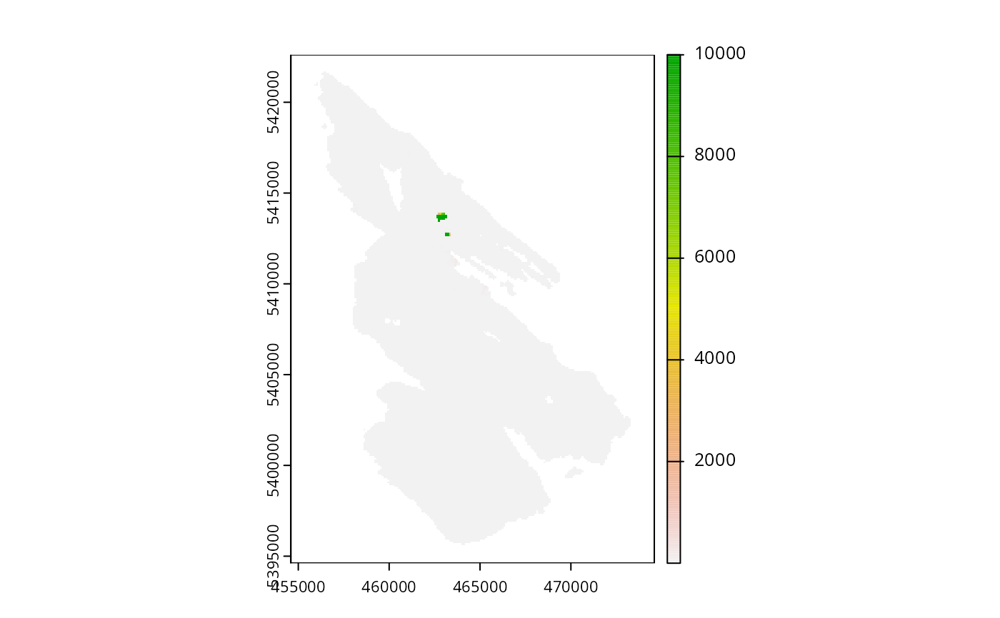

Conservation planning dataset for Salt Spring Island, Canada. It was obtained as part of an online Marxan-based planning tool created for the Coastal Douglas-fir Conservation Partnership (CDFCP; Schuster et al. 2017).
get_salt_pu()
get_salt_features()Format
- salt_features
terra::rast()object.- salt_pu
terra::rast()object.
Details
The following functions are provided to import data:
get_salt_pu()Import planning unit data. The planning units are a single layer
terra::rast()object. Cell values denote the monetary cost of acquiring different areas (e.g., a value of 1 = $100,000 CAD; BC Land Assessment 2015).get_salt_features()Import biodiversity feature data. The feature data are a multi-layer
terra::rast()object object. It contains the spatial distribution of five key ecological communities found on Salt Spring island. Each layer represents a different community type. These classes are (i) old forest, (ii) savanna, (iii) wetland, (iv) shrub, and (v) inverse probability of occurrence of human commensal species. For each layer, values indicate the composite probability of encountering the suite of bird species most commonly associated with that community type.
References
BC Assessment (2015) Property Information Services. Available at https://www.bcassessment.ca (Date Accessed 2016/06/13).
Morrell N, Schuster R, Crombie M, and Arcese P (2017) A Prioritization Tool for the Conservation of Coastal Douglas-fir Forest and Savannah Habitats of the Georgia Basin. The Nature Trust of British Colombia, Coastal Douglas Fir Conservation Partnership, and the Department of Forest and Conservation Sciences, University of British Colombia. Available at http://peter-arcese-lab.sites.olt.ubc.ca/files/2016/09/CDFCP_tutorial_2017_05.pdf (Date Accessed 2017/10/09).
Examples
# load packages
library(terra)
#> terra 1.7.3
library(sf)
#> Linking to GEOS 3.10.2, GDAL 3.4.1, PROJ 8.2.1; sf_use_s2() is TRUE
# import data
salt_pu <- get_salt_pu()
salt_features <- get_salt_features()
# preview planning units
print(salt_pu)
#> class : SpatRaster
#> dimensions : 280, 200, 1 (nrow, ncol, nlyr)
#> resolution : 100, 100 (x, y)
#> extent : 454589.9, 474589.9, 5394614, 5422614 (xmin, xmax, ymin, ymax)
#> coord. ref. : WGS 84 / UTM zone 10N (EPSG:32610)
#> source : salt_pu.tif
#> name : cost
#> min value : 2.552e-02
#> max value : 1.000e+04
plot(salt_pu)

# preview features
print(salt_features)
#> class : SpatRaster
#> dimensions : 280, 200, 5 (nrow, ncol, nlyr)
#> resolution : 100, 100 (x, y)
#> extent : 454589.9, 474589.9, 5394614, 5422614 (xmin, xmax, ymin, ymax)
#> coord. ref. : WGS 84 / UTM zone 10N (EPSG:32610)
#> source : salt_features.tif
#> names : old orest, savanna, wetland, shrub, inverse human
#> min values : 0.3595050, 0.2979212, 0.1132785, 0.4013101, 0.3703639
#> max values : 0.9312289, 0.6608167, 0.6434712, 0.8249719, 0.9032656
plot(salt_features)